Charging is a journey, not a pin
EV drivers need to discover charging locations, evaluate connector and station information, plan a route and coordinate a charging session.
PRODUCT DESIGN CASE STUDY / EV MOBILITY
Designing an EV charging experience that connects nearby station discovery, route planning, charger details, slot booking and payment.
EV Charge Ahead is represented in the supplied screens as a mobile EV charging companion. The experience helps drivers locate charging stations, compare availability and amenities, inspect station information and reviews, plan a route, reserve a charging slot, apply a coupon and manage bookings.

Project evidence: The uploaded archive contains UI exports and a portfolio cover, but no project brief, named research records, delivery dates, team details or launch evidence. The UX narrative below distinguishes visible screen evidence from reconstructed design rationale and proposed validation.
A driver needs more than a map pin. They need to know which station is usable, whether it fits their vehicle, how it fits into the journey, and what happens after booking and payment.
EV drivers need to discover charging locations, evaluate connector and station information, plan a route and coordinate a charging session.
Structure a mobile experience from onboarding and location access through station search, details, route planning, slot selection, payment and booking management.
Shape map/list discovery, filters, station information and reviews, multi-stop trip planning, booking summary, coupon entry, payment confirmation and booking states.
The archive documents the key surfaces needed to move from finding a station to planning a route, booking a charging slot and reviewing booking status.
EV charging is a multi-step decision. The driver must find a station, assess whether it is suitable, understand the route and commit to a time slot. Each missing or unclear detail can create uncertainty at a critical moment.
Location, distance, charger availability, connector type, charging speed and amenities all influence whether a station is a viable stop.
Map pins, nearby results, filters, station detail, route planning and booking need to work as one continuous journey instead of isolated screens.
Drivers need to review vehicle, connector, slot date/time, charge duration, coupon and total price before confirming a reservation.
Booking status, route guidance, history and next steps should remain accessible after the transaction.
A useful first release should protect the core charging journey. MoSCoW clarifies which capabilities are essential to finding and booking a charger and which can be sequenced later.
Without these, the driver cannot complete the fundamental find-to-charge task.
These features help drivers compare options, understand value and manage the booking.
Potential enhancements to research after core discovery, route and booking behaviors are reliable.
Proposed non-goals to keep the first experience focused; not recorded as approved product decisions.
MoSCoW status: This prioritization is reconstructed from the supplied screen set and the core task. It is not claimed as an original product-owner backlog or prioritization workshop result.
The interface exposes the key decision variables—location, charger type, availability, price, distance, amenities, reviews, route and slot time. The archive does not include interview notes, participant profiles, usability sessions or field research, so these are research questions and screen-based observations, not claimed findings.
Investigate where drivers usually charge, how they decide to stop, what happens when a preferred charger is occupied and how they plan longer journeys.
Research proposalUnderstand how drivers compare distance, availability, connector compatibility, charging power, price, amenities and reviews.
Screen-based task modelExplore the dependencies between app booking, station data, charger status, payment, arrival, charging start and support when a station is unavailable.
Research proposal| Observed screen evidence | UX interpretation | Design opportunity | Evidence status |
|---|---|---|---|
| Home combines map markers and nearby station cards. | Drivers may use spatial context and list comparison together. | Keep map and list coordinated and make the selected station obvious. | Visible in UI |
| Filters include location, charger type and charging-port/availability-related options, plus price and discount sorting/filtering. | Station selection depends on more than distance. | Make applied filters visible, understandable and easy to clear. | Visible in UI |
| Station details show availability, distance, rating, connector/charger information, amenities, reserve and directions actions. | Drivers need enough information to judge station suitability before committing. | Prioritize compatibility, availability, location and next action. | Visible in UI |
| Station detail separates Info, Chargers and Reviews. | Station evaluation includes factual data, hardware details and social proof. | Use clear tabs or sections with consistent context and action access. | Visible in UI |
| Trip planner includes origin, destination, route map, navigation and route summary. | Charging discovery needs to support journey planning, not just nearby search. | Keep route context visible and explain distance and estimated duration. | Visible in UI |
| Booking summary shows vehicle, battery, slot, connector, charge time, coupon and price. | Booking is a high-commitment step that requires a transparent summary. | Make all booking variables and the final payable amount easy to verify. | Visible in UI |
The screen set suggests three task-based archetypes: drivers locating a nearby charger, drivers planning a longer route, and drivers managing a reservation. These are proto-archetypes inferred from the product capabilities, not validated demographic personas.
Context: needs a convenient charging stop nearby.
“Show me a compatible charger close by, and help me know whether I can use it now.”
Context: needs charging stops along a journey.
“Help me plan the route with charging stops so I can travel with fewer surprises.”
Context: wants a confirmed slot and clear payment status.
“Let me review the charging details, pay confidently and find my booking later.”
Validate these archetypes with real EV drivers and distinguish use cases such as home charging, workplace charging, public destination charging and highway travel if those are in scope.
The journey map connects the screens into a single task: understand the product, find a suitable station, plan the route, book a slot, pay and manage the reservation. Friction and opportunities are design hypotheses to validate.
The supplied flow ends at booking confirmation and booking management. It does not show the actual charger plug-in, charging-session start/stop, post-charge settlement or support resolution. Those are important service blueprint stages to validate and design if the product supports them.
The app navigation and screens indicate four main destinations—Home, Station, History and Profile—supported by onboarding, station detail, trip planning and checkout flows.
IA scope: This hierarchy is reconstructed from visible navigation and screen content. It is not a verified route map or complete product taxonomy. Confirm which details are nested in Station vs Home and what Profile contains against the actual app.
The main flows show the task sequence and decision points that matter most. They also identify recovery states that are not shown in the supplied screen set but should be specified before release.
View map and nearby stations.
Use location or enter area.
Choose charger type, availability or price.
Compare distance and availability.
Review info, chargers and ratings.
Decision to validate: what happens when location permission is denied, no compatible charger is available, or a station's availability changes after selection?
Enter starting location.
Set journey endpoints.
Review charging route.
Follow the mapped route.
Check duration and distance.
Important product question: are charging stops automatically selected based on vehicle range and state of charge, or is the route simply a map path? The screens do not prove range-aware route optimization.
Choose compatible charger.
Review vehicle, time and connector.
Enter and verify coupon.
Review final amount and submit.
Show transaction confirmation.
Critical recovery states: slot becomes unavailable, coupon invalid/expired, payment pending/failed, duplicate payment, booking creation failure and payment success with booking confirmation delayed.
Open reservation list.
Choose booking state.
Review station and connector.
Review previous sessions.
Validation need: define cancellation, reschedule, refund, arrival check-in and support actions if those are supported in the business model.
A senior case study should show why the experience is structured this way, not only what screens exist.
| Decision | Driver need | Design response in supplied screens | Trade-off / validation need |
|---|---|---|---|
| Pair map with nearby list | Understand geographic proximity and compare station options. | Show station pins and nearby cards in the Home experience. | Map/list selection must stay synchronized; avoid hiding list results under map overlays. |
| Expose practical filters | Narrow options by charger type, availability, location and price. | Use a dedicated Filter sheet with clear/apply actions. | Show active filter count and preserve filters when returning from station details. |
| Prioritize station suitability | Know whether the charger fits the vehicle and trip. | Show connector, charging power, availability, distance, amenities and rating. | Clarify live-data freshness and connector compatibility; do not imply live availability without a reliable data source. |
| Separate station Info and Reviews | Review technical details and social proof without crowding one screen. | Dedicated Info and Reviews tabs; Chargers appears as a related section. | Keep the station identity and primary actions available across tabs. |
| Provide a route-planning flow | Understand distance and duration before driving. | Origin/destination inputs, map route, navigation and route summary. | Do not promise EV range optimization unless vehicle state, battery and charger data drive the calculation. |
| Summarize booking before payment | Verify vehicle, slot, connector, duration and coupon. | Booking summary with coupon entry and confirm action. | Reconcile price, taxes, discounts and payment amount in a single authoritative total. |
| Separate booking states | Find active, upcoming and past reservations. | My Bookings tabs such as Ongoing, Booked and History. | Define clear state transitions, cancellation rules and empty/error states. |
The screens are presented in task order to show how the product experience unfolds—from the value proposition and permissions through station discovery, route planning and booking.
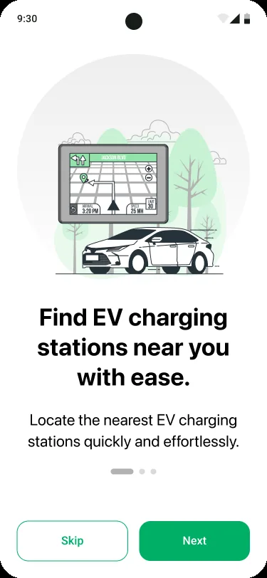
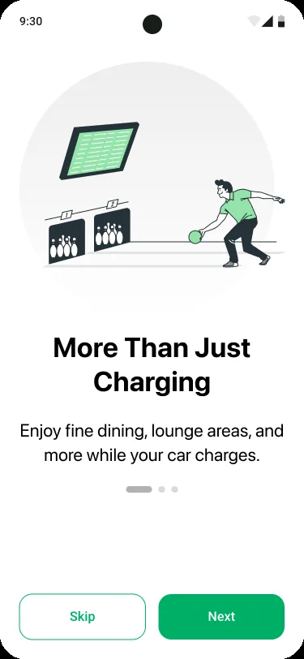
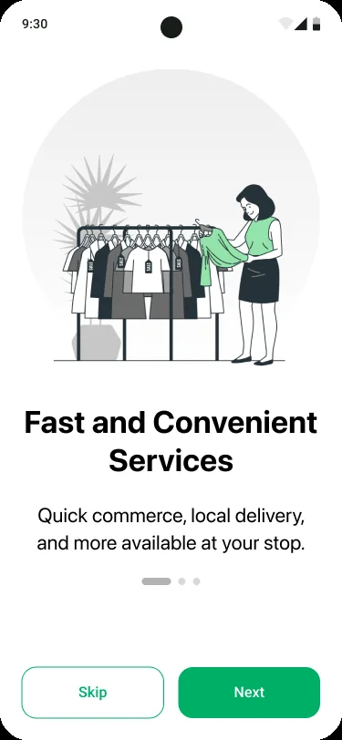
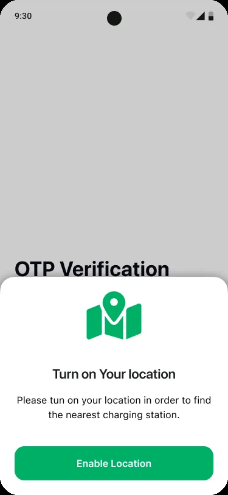
The onboarding sequence establishes the charging proposition before requesting location access. Location is a key dependency for “near me” discovery, so the permission prompt should explain the immediate benefit and offer manual location entry when permission is declined.
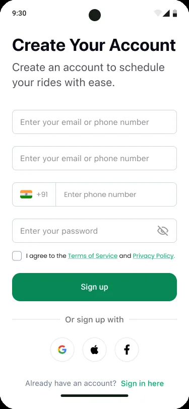
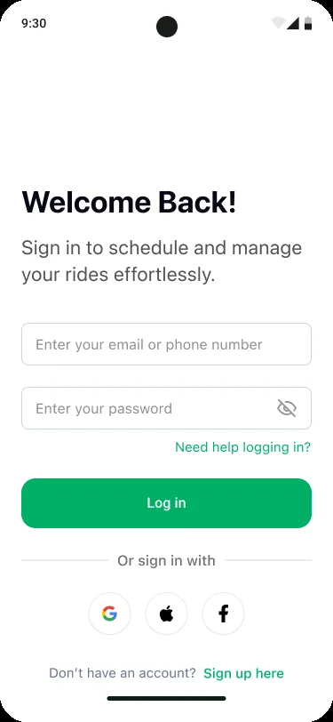
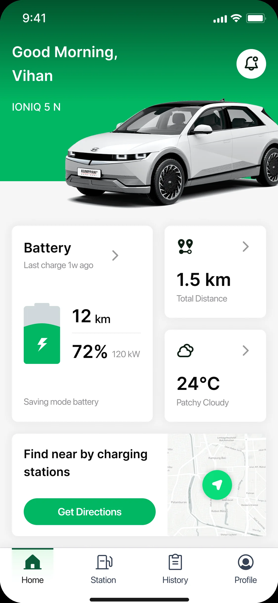
Account screens support registration, OTP verification and returning access. The vehicle dashboard introduces vehicle-related information such as battery and range, which could help personalize station suitability if connected to accurate vehicle data.
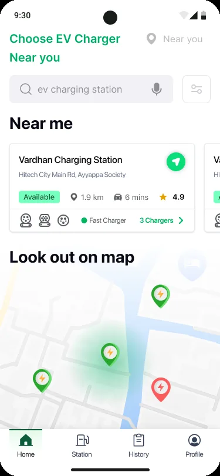
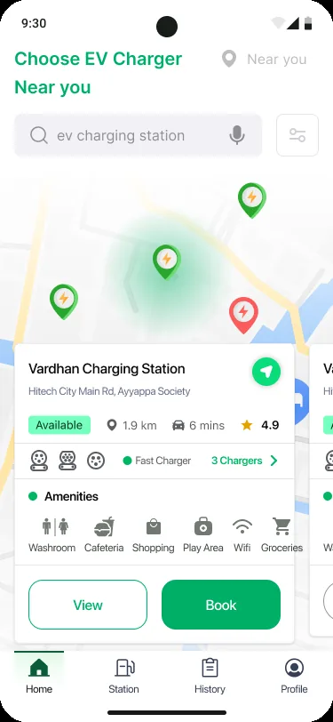
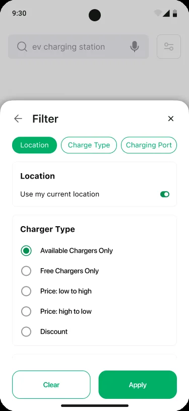
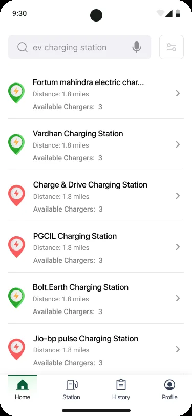
The discovery experience combines spatial context with searchable and filterable results. Station cards show availability, distance and other decision cues; filter choices include charger availability/type and price-related options.
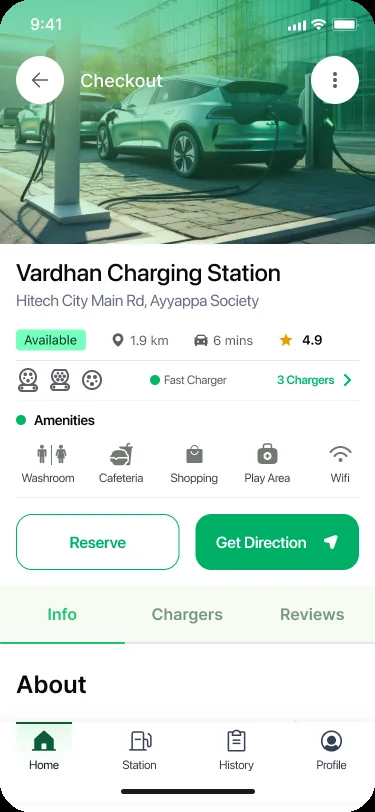
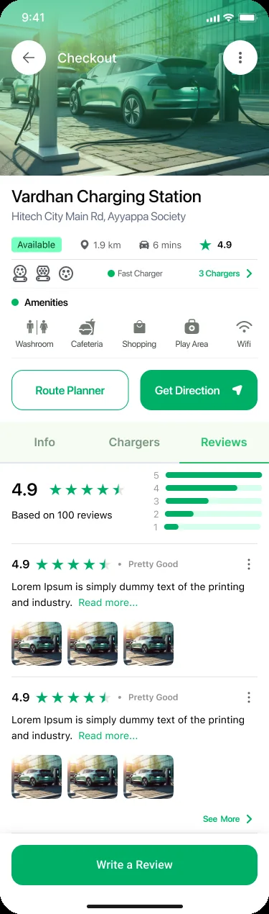
Station detail brings together operational facts, amenities and decision support. Reviews offer a separate trust signal. Compatibility and the freshness of availability data should be highly visible, because stale information can undermine the whole experience.
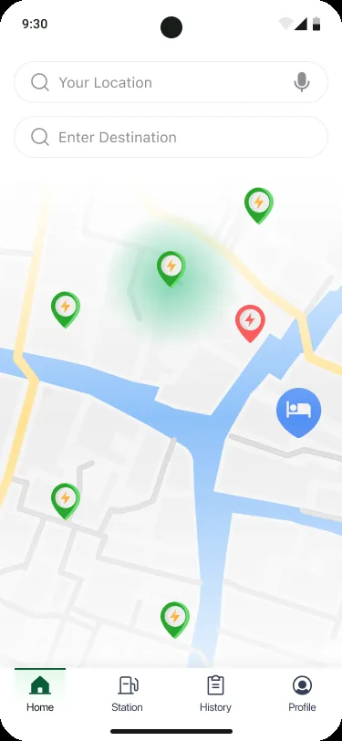
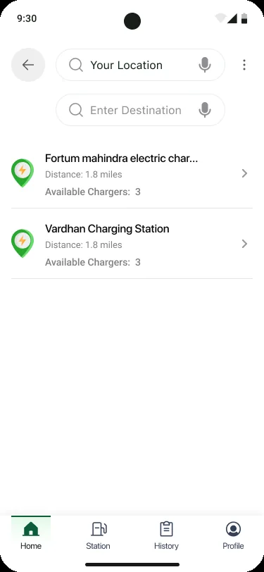
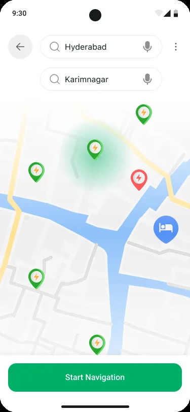
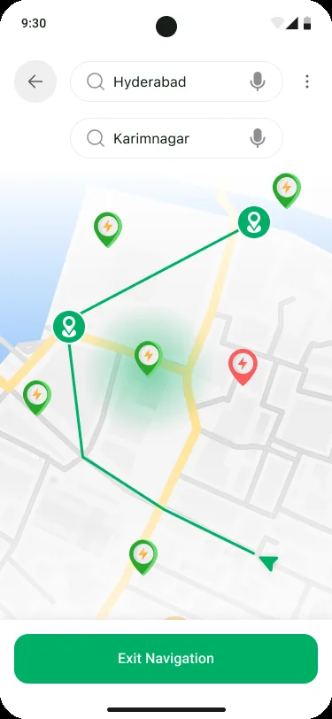
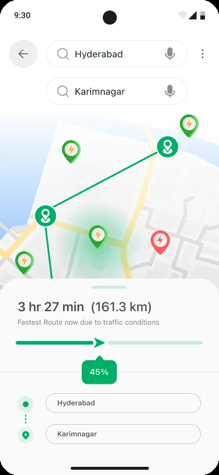
The planner progresses from endpoint entry to route visualization, navigation and summary. The screen displays a route estimate of 3 hr 27 min and 161.3 km in its sample state. The supplied screens do not prove that route selection is optimized against live battery state or charger occupancy.
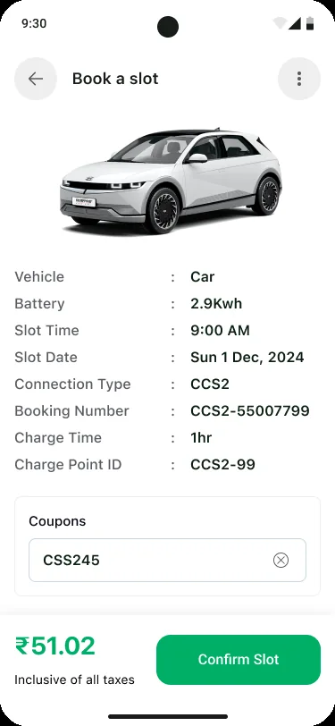
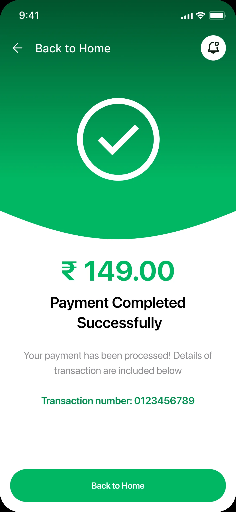
The booking summary gives the driver a chance to review the vehicle, connector, time slot, charge duration and coupon before confirming. The payment confirmation provides a success state and transaction reference. The displayed amounts should be reconciled across these screens.
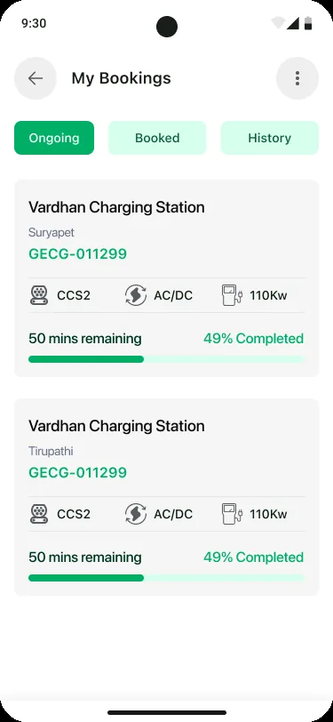
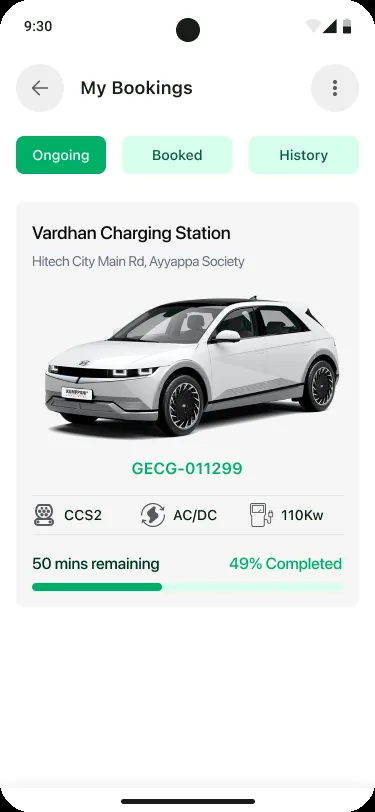
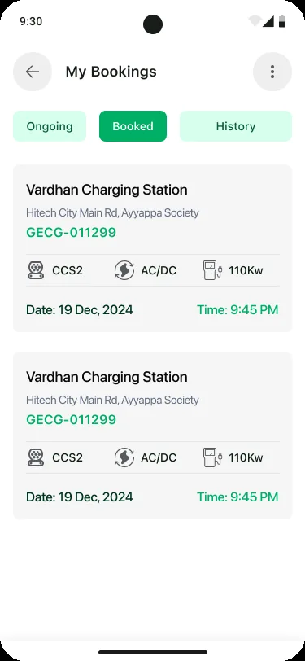
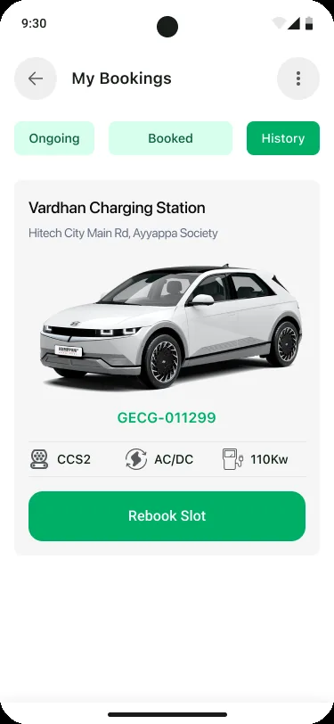
Booking management separates ongoing, booked and historical records. Status definitions, cancellation eligibility, rescheduling and support actions should be made explicit in the complete service design.
The supplied screens use a green-led visual language, map markers, station cards, amenity icons, status labels and consistent bottom navigation. The design-system story connects these patterns to the decisions they support.
Observed visual direction: green primary actions, pale surfaces, dark text, and contrasting map/status markers. Values are illustrative estimates, not extracted source tokens.
Establish hierarchy for station names, addresses, connector types, power, distance, availability, ratings and booking metadata.
Use repeatable card padding, clear map overlays, consistent bottom navigation and tap targets that remain usable on the map.
| Component family | Variants / states to define | Behavior contract | Evidence in screens |
|---|---|---|---|
| Map station marker | Available · unavailable · selected · unknown | Use a clear legend and never rely on color alone; selected marker matches selected card. | Home / Trip Planner |
| Station card | Default · selected · unavailable · loading | Show station name, distance, availability, connector/power and rating where available. | Home / Search results |
| Filter control | Default · selected · applied · cleared | Persist choices, show applied state/count and provide reset. | Filter sheet |
| Station detail tabs | Info · Chargers · Reviews | Maintain station identity and primary action as content changes. | Station detail |
| Route step / stop | Planned · active · completed · missed | Show route order, distance, duration and status consistently. | Trip Planner |
| Booking summary | Editable · coupon applied · invalid coupon · payable | Keep slot, connector, vehicle and final payable amount synchronized. | Book a slot |
| Payment status | Pending · success · failed · refunded | Provide definitive status, transaction reference and recovery path. | Payment success |
| Booking card | Ongoing · booked · completed · cancelled | Make date, time, station, connector and next action clear. | My Bookings |
Design-system evidence boundary: The screens show consistent patterns and component families. They do not prove a production Figma component library, exported tokens, coded React component package, Storybook or versioning strategy. Include actual design-library or implementation evidence before claiming those deliverables.
A charging app operates in changing physical contexts. Users may be driving, walking around a station, dealing with poor connectivity or making a payment. The interface must prioritize safety, clear status and recovery.
Provide an equivalent station list, text labels for markers, accessible filters and a selected-station state that does not rely on color alone.
Support clear voice guidance, simple route status, large tap targets and discourage complex interactions while the vehicle is moving.
Show when charger availability was last updated and distinguish live status from estimated or cached status.
Explain charging fee, taxes, coupon discount and payable amount consistently across booking, payment and receipt.
Make connector type and charging power visible and compare them with the member's vehicle compatibility where supported.
Use sufficient contrast, semantic labels, screen-reader support, dynamic text and touch targets sized for real use.
These are design and QA requirements, not proof of formal WCAG conformance, road-safety evaluation or live-data reliability testing.
Validate the highest-risk decisions with EV drivers: choosing a compatible station, trusting availability, following a route, understanding price and confirming a reservation.
| Test scenario | What to observe | Success signal | Priority |
|---|---|---|---|
| Find a nearby charger | Can the driver use map/list, search and filters to find a suitable option? | Finds a station that matches location and connector needs without help. | Critical |
| Compare two stations | Can the driver interpret power, connector, availability, amenities and reviews? | Chooses a suitable station and explains the trade-off. | Critical |
| Plan a longer route | Can the driver understand route distance, duration and charging stops? | Understands the route and knows where to charge. | Critical |
| Book a slot and use a coupon | Can the driver verify slot, connector, total and discount? | Completes booking with no pricing ambiguity. | Critical |
| Recover from payment issue | Does the user know whether payment or booking succeeded? | Avoids duplicate payment and can recover or contact support. | Critical |
| Retrieve a booking | Can the driver find upcoming and past bookings? | Finds the correct station, date/time and booking reference. | High |
The supplied design set documents an end-to-end driver journey from discovering charging infrastructure to planning, reserving, paying and managing bookings.
DESIGN CONTRIBUTION
Connected station discovery, trip planning and charging reservation into a single driver-facing proposition.
Designed map/list exploration, search, filters, station cards and detail views.
Organized connector, charging power, amenities, ratings and reviews to support station choice.
Designed origin/destination entry, route visualization, navigation and route summary screens.
Designed slot summary, coupon entry, payment success and booking retrieval experiences.
Established repeatable patterns across map markers, cards, filters, tabs, route states and booking status.
In EV mobility, the map is only the beginning. The real product value is reducing uncertainty between “I need a charge” and “I have a reliable plan.” That requires trusted station data, clear compatibility, useful route context, transparent pricing and dependable booking states. The next iteration should validate those dependencies with drivers and charging-network operations.